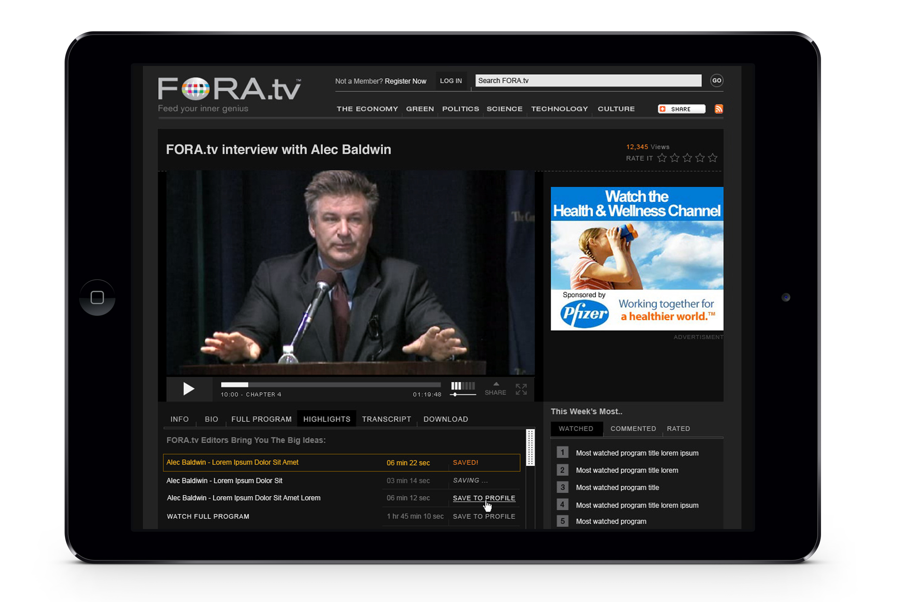
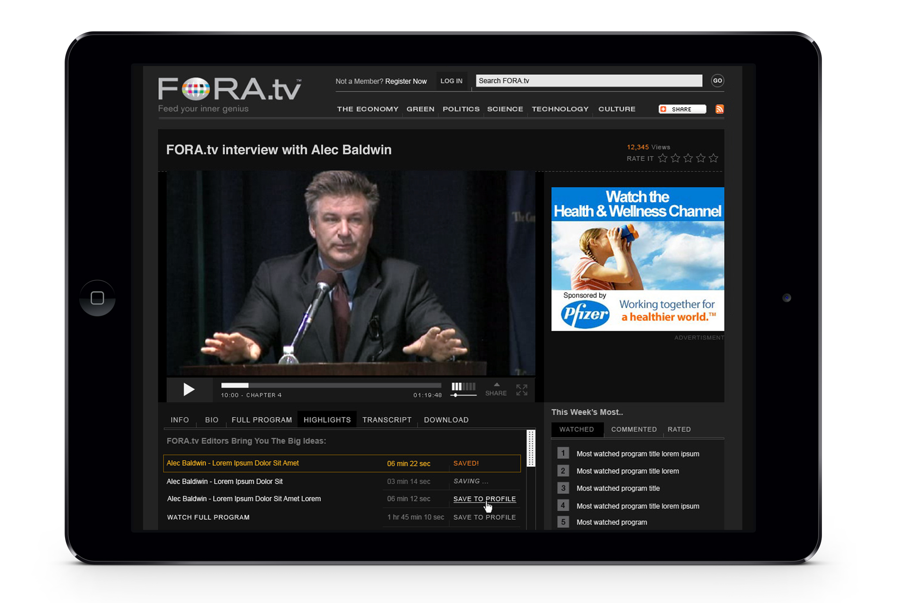
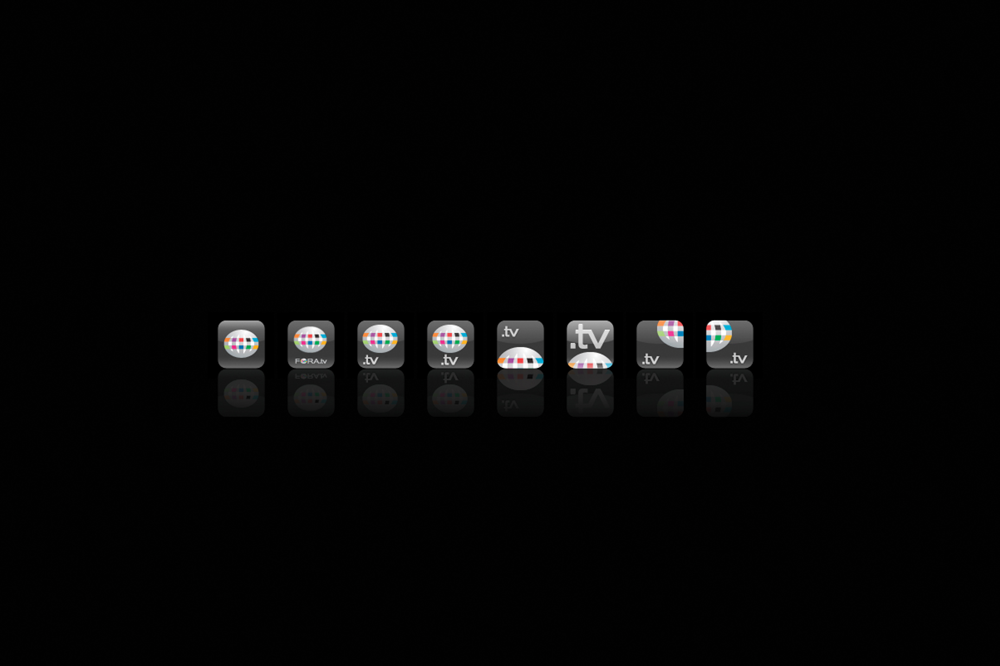
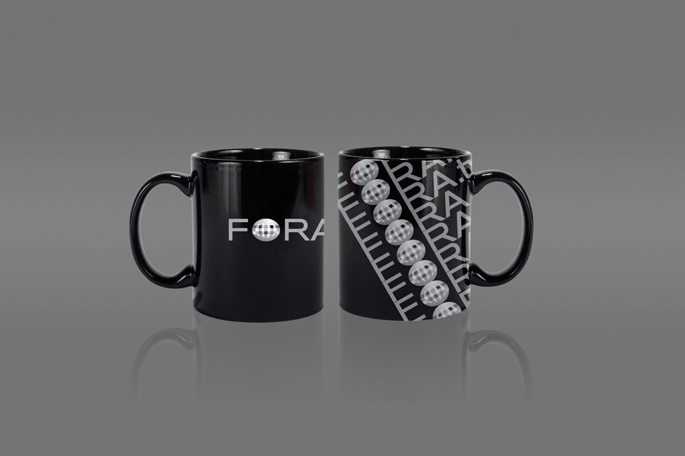
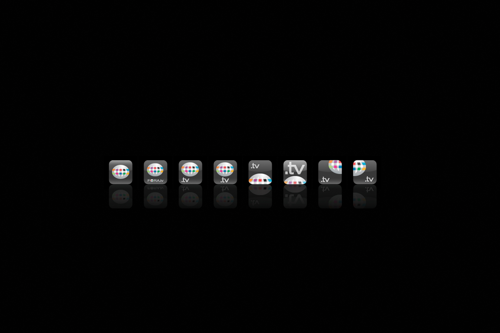
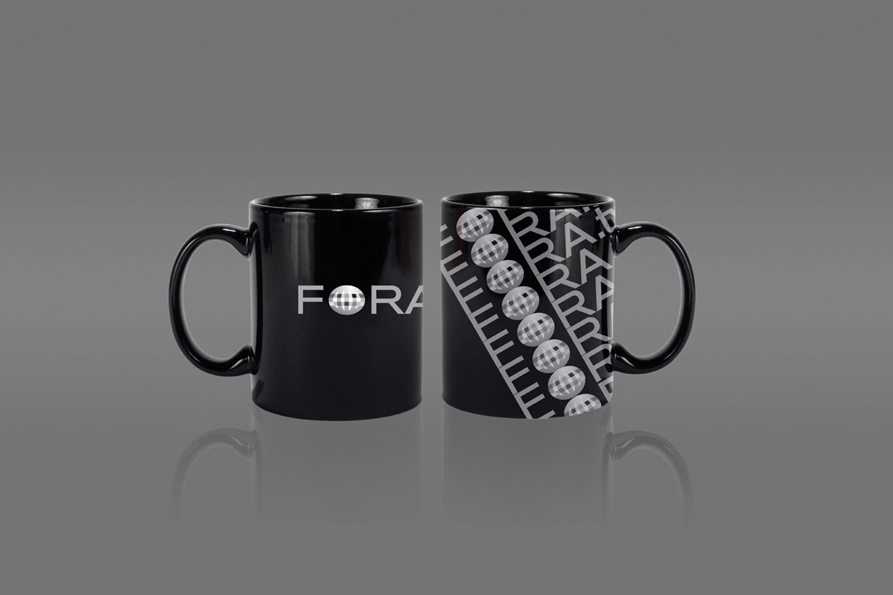

 



Solution
The design was inspired by theaters, where viewing is immersive and free of distraction. The aim was to deliver a similar experience for viewing online videos. In August 2009, FORA.tv was selected for TIME.com's 50 Best Websites.
Client—FORA.tv
Agency—Freelance
Solution
The design was inspired by theaters, where viewing is immersive and free of distraction. The aim was to deliver a similar experience for viewing online videos. In August 2009, FORA.tv was selected for TIME.com's 50 Best Websites.